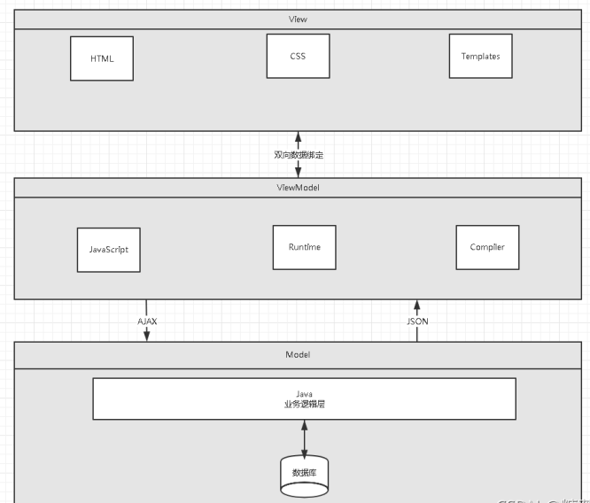

Vue2(使用) Vue初识 1、什么是MVVM MVVM（Model-View-ViewModel）是一种软件设计模式，由微软WPF（用于替代WinForm，以前就是用这个技术开发桌面应用程序的）和Silverlight（类似于Java Applet，简单点说就是在浏览器上运行WPF）的架构师Ken Cooper和Ted Peters开发，是一种简化用户界面的事件驱动编程方式。由John Gossman（同样也是WPF和Sliverlight的架构师）与2005年在他的博客上发表。
MVVM源自于经典的MVC（Model-View-Controller）模式。MVVM的核心是ViewModel层，负责转换Model中的数据对象来让数据变得更容易管理和使用。其作用如下：
该层向上与视图层进行双向数据绑定 向下与Model层通过接口请求进行数据交互
MVVM已经相当成熟了，主要运用但不仅仅在网络应用程序开发中。当下流行的MVVM框架有Vue.js，Anfular JS
2、为什么要使用MVVM MVVM模式和MVC模式一样，主要目的是分离视图（View）和模型（Model），有几大好处
低耦合：视图（View）可以独立于Model变化和修改，一个ViewModel可以绑定到不同的View上，当View变化的时候Model可以不变，当Model变化的时候View也可以不变。

View View是视图层，也就是用户界面。前端主要由HTML和css来构建，为了更方便地展现ViewModel 或者Model 层的数据，已经产生了各种各样的前后端模板语言，比如FreeMarker、Thymeleaf 等等，各大MVVM 框架如Vue.js，AngularJS，EJS 等也都有自己用来构建用户界面的内置模板语言。
Model Model是指数据模型， 泛指后端进行的各种业务逻辑处理和数据操控， 主要围绕数据库系统展开。这里的难点主要在于需要和前端约定统一的接口规则
ViewModel ViewModel是由前端开发人员组织生成和维护的视图数据层。在这一层， 前端开发者对从后端获取的Model数据进行转换处理， 做二次封装， 以生成符合View层使用预期的视图数据模型。
需要注意的是View Model所封装出来的数据模型包括视图的状态和行为两部分， 而Model层的数据模型是只包含状态的
比如页面的这一块展示什么，那一块展示什么这些都属于视图状态(展示)
Vue概述 Vue被设计为可以自底向上逐层应用。Vue的核心库只关注视图层 ，不仅易于上手，还便于与第三方库（如: vue-router: 跳转，vue-resource: 通信，vuex:管理）或既有项目整合
Vue官网：https://cn.vuejs.org/
在MVVM架构中，是不允许数据和视图直接通信的，只能通过ViewModel来通信，而ViewModel就是定义了一个Observer观察者
ViewModel能够观察到数据的变化，并对视图对应的内容进行更新
模板语法 模板语法又叫插值语法,大胡子语法, 如:
括号中的数据可以写 js表达式 , 和 data属性的内容,还有vm的computed (vm实例的一个配置项),其中,html标签中的文本内容叫做模板
1 2 3 4 5 6 7 8 9 10 11 12 13 14 15 16 17 18 19 20 21 22 23 24 25 26 27 28 29 30 31 32 33 34 35 36 37 38 39 40 41 42 <!DOCTYPE html > <html lang ="en" > <head > <meta charset ="UTF-8" > <meta http-equiv ="X-UA-Compatible" content ="IE=edge" > <meta name ="viewport" content ="width=device-width, initial-scale=1.0" > <script src ="../js/vue.js" > </script > <title > Document</title > </head > <body > <div id ="root" > <h2 > 学校名称:{{school}}</h2 > <h2 > 专业名称:{{major}}</h2 > </div > </body > <script > Vue .config .productionTip = false ; var vm = new Vue ({ el : "#root" , data ( return {school :"广科师" ,major :"软件工程" } } }); </script > </html >
VM配置属性 vm( 即ViewModel )对象负责对Model成进行交互, 对视图层进行控制管理
其构造方法 Vue(Object obj); ,其中的参数是一个对象,对象的属性包括了vue对象的一些基本信息
vm的对象有如下这些:
el 绑定Dom 用来将vm绑定dom容器,并且一一对应(一般是根容器)
1 2 3 4 5 6 7 8 9 10 11 12 13 14 15 16 17 18 19 20 21 22 23 24 <!DOCTYPE html > <html > <head > <meta charset ="utf-8" > <title > 初识vue</title > <script src ="js/vue.js" type ="text/javascript" charset ="utf-8" > </script > </head > <body > <div class ="div1" > 1. hello {{name}}! 时间戳:{{new Date()}} </div > <div class ="div1" > 2. hello {{name}}! </div > <script type ="text/javascript" > Vue .config .Vue .config .productionTip = false new Vue ({ el : ".div1" , </script > </body > </html >
data 数据属性 data用于存放vm对象的数据, 有两种写法: 对象式和函数式,一般我们推荐用函数式写法
对象式写法(不推荐):
1 2 3 4 5 6 7 8 9 10 11 <script > Vue .config .productionTip = false ; var vm = new Vue ({ el : "#root" , data :{ school :"xxxxx" , major :"软件工程" } }); </script > </html >
函数式写法
1 2 3 4 5 6 7 8 9 10 11 12 13 14 15 16 17 18 19 20 21 22 23 24 <!DOCTYPE html > <html lang ="en" > <head > <meta charset ="UTF-8" > <meta http-equiv ="X-UA-Compatible" content ="IE=edge" > <meta name ="viewport" content ="width=device-width, initial-scale=1.0" > <script src ="../js/vue.js" > </script > <title > Document</title > </head > <div id ="root" > <h2 > 学校名称:{{school}}</h2 > <h2 > 专业名称:{{major}}</h2 > </div > </body > <script > Vue .config .productionTip = false ; var vm = new Vue ({ el : "#root" , data ( return {school :"xxx" ,major :"软件工程" } } }); </script > </html >
Vue中的数据代理 Vue 数据代理: 在页面中 实际上获取到的值,应该是 data(){构造器Vue({对象})中的参数对象称为 opintion , 其中参数对象的 data属性 会成为 vue实例的生成一个名为 _data的属性 (此时依然没有涉及到数据代理,属于赋值的关系),即实际上js整个作用域中真实存在的只有 _data属性 (这个属性的类型是对象)随后为了编码方便,vue实例又生成代理_data对象的属性值的属性
methods 方法(事件处理) methods里可为vm对象新建多个方法,一般用于事件绑定
methods配置的函数最终都会被vm管理,并且不要使用箭头函数,否则this将会变成 window , 默认是指向vm或组件实例
注意: 当事件函数名带括号时如果不写$event就无法获取(只写函数名能获取则可以)到事件对象event 如 f() 即如果无须指定参数,且想用 event请直接写函数名即可
基本事件处理: 1 2 3 4 5 6 7 8 9 10 11 12 13 14 15 16 17 18 19 20 21 22 23 24 25 26 27 28 29 30 31 32 33 34 35 36 37 38 39 40 41 42 43 44 45 46 47 48 49 50 <!DOCTYPE html > <html lang ="en" > <head > <meta charset ="UTF-8" > <meta http-equiv ="X-UA-Compatible" content ="IE=edge" > <meta name ="viewport" content ="width=device-width, initial-scale=1.0" > <title > Document</title > <script src ="../js/vue.js" type ="text/javascript" > </script > </head > <body > <div id ="root" > <h2 > 你好!欢迎来到{{name}}</h2 > <button type ="button" @click ="showInfo" > 点我提示信息</button > <button type ="button" @click ="showInfo2($event,'data')" > 点我提示信息(传参)</button > </div > <script type ="text/javascript" > Vue .config .productionTip = false ; const vm = new Vue ({ el :"#root" , data ( return {name :"Vue" } }, methods :{ showInfo (event ){ console .log (event.target ); alert ("欢迎学习vue" ); }, showInfo2 (event,num ){ console .log (event.target ); console .log (num); } } }); </script > </body > </html >
键盘事件处理 vue为了方便开发,给常用的按键起了别名 ,我们可以通过 @按键事件.别名 来绑定特定案件(可以使用多个按键, 如 @keyup.ctrl.y)
按键事件: keydwon即当 键 按下去时触发(组合键不可用) , keyup当 键 松起时触发
每个按键都有一个代号 可以通过 event对象的keyCode属性查看到, 注: 2022-2-9 keyCode已经弃用, 采用 key属性替换
1.常用别名
回车 enter
删除 delete (捕获删除键和退格键)
退出 esc
空格 space
换行 tab (注意:由于会切换焦点,故只能配合keydwon使用 )
方向键: 上 up 下 dwon 左 left 右 right
2.系统修饰按键(用法特殊): ctrl alt shift meta(徽标键)
(1) 配合 keyup使用: 按下修饰键的同时再按下其他键,随后其他键才能触发
(2) 配合 keydwon使用: 正常触发
3.Vue未提供的别名的按键,可以使用原始key值去绑定,但要注意键名是组合的单词的时候需要转为kebab-case
如 大写锁定键 CapsLock 应该写为 @keyup.caps-lock = 事件函数名
4.自定义按键别名
Vue.config.keyCodes.自定义别名 = 键码
1 2 3 4 5 6 7 8 9 10 11 12 13 14 15 16 17 18 19 20 21 22 23 24 25 26 27 28 29 30 31 32 33 34 35 36 37 <!DOCTYPE html > <html > <head > <meta charset ="utf-8" > <title > </title > <script src ="../js/vue.js" type ="text/javascript" charset ="utf-8" > </script > </head > <body > <div id ="root" > 按回车打印<input type ="text" name ="" id ="" value ="" @keyup.ctrl ="print" /> </div > <script type ="text/javascript" > Vue .config .productionTip = false ; var vm = new Vue ({ el :"#root" , methods :{ print (event ){ console .log ("按键:" ,event.key ); console .log (event.target .value ); } } }); </script > </body > </html >
事件修饰符 常用的事件修饰符(修饰符可以连续使用多个如 @click.stop.prevent):
1.prevent 阻止默认事件(常用)
2.stop 阻止事件冒泡 (常用) , 事件冒泡是指 当子元素与父元素有相同的事件时, 当子元素触发后父元素也会触发
3.once 事件只触发一次(常用)
4.capture 使用事件的捕获模式, 也就是事件处理在获取阶段就进行处理
浅谈事件的捕获与冒泡: js事件分为了捕获和冒泡两个阶段,
捕获阶段是由外往内的,冒泡阶段是由外往内的 , 其中,是先进行了事件捕获,再进行事件冒泡的, 不过最后处理事件是在冒泡阶段完成
5.self 只有event.target 是当前操作的元素时才触发事件, 场景假设: 当 div里有一个按钮, 两者同时存在click事件,但是div触发事件的回调的 event.target 是button
6.passive 事件默认行为 为立即执行, 无需等待事件回调执行完毕, 例如有个 a标签,点击事件绑定了有 alert语句的事件函数,
使用此修饰符将会 立即跳转而不等待弹窗
computed 计算 计算属性和方法有点类似,但是为了解耦, 所以引入了计算属性, 虽然也写成方法形式 , 不过计算属性是有值的, 他的值就是方法的返回值
此外还需要注意使用计算属性时不能加括号 (因为是代表一个值) , 可以在插值语法中使用
计算属性有三种写法如下所示:
注意: 简写的时候没有set()也就意味着是没法修改的, 并且由于他还是属性,使用计算属性时不能加括号
1 2 3 4 5 6 7 8 9 10 11 12 13 14 15 16 17 18 19 20 21 22 23 24 25 26 27 28 29 30 31 32 33 34 35 <script type ="text/javascript" > Vue .config .productionTip = false ; var vm = new Vue ({ el : "#root" , data : { fristname3 : "枫" , lastname3 : "叶" , }, computed : { fullName ( console .log ("get被调用!" ); return this .fristname3 + "-" + this .lastname3 ; } } }); </script >
watchd 监视 (异步计算) 监视属性与计算属性非常类似, 当一般计算时通常使用,computed计算属性, 但涉及到异步运算, 就用 watch 监视属性来间接实现
两者区别如下:
1.computed能完成的,watchd都能完成
2.watch能完成的, computed不一定能完成, 比如异步操作
两个重要的小原则:
1.所有被vue管理的函数, 最好写成,普通函数,这样this指向的是 vue或组件实例对象
2.所有不被vue管理的函数(如:定时器的回调函数,ajax的回调函数等), 最好写成箭头函数 ,这样 this 才可以指向 vm 或组件实例
如下面的例子:
1 2 3 4 5 6 7 8 9 10 11 12 13 14 15 16 17 18 19 20 21 22 23 24 25 26 27 28 29 30 31 32 33 34 35 36 37 38 39 40 41 42 43 44 45 46 47 48 49 50 51 52 53 54 55 56 57 58 59 60 61 <!DOCTYPE html > <html > <head > <meta charset ="utf-8" > <title > </title > <script src ="js/vue.js" type ="text/javascript" charset ="utf-8" > </script > </head > <body > <div id ="root" > <h4 > 使用计算属性computed实现</h4 > 姓:<input type ="text" name ="" id ="" v-model ="fristname3" /> <br > <br > 名:<input type ="text" name ="" id ="" v-model ="lastname3" /> <br > <br > <span > 全名: {{fullName}}</span > <br > <h4 > 使用监听属性</h4 > 姓:<input type ="text" name ="" id ="" v-model ="fristname2" /> <br > <br > 名:<input type ="text" name ="" id ="" v-model ="lastname2" /> <br > <br > <span > 全名: {{fullName2}}</span > <br > </div > <script type ="text/javascript" > Vue .config .productionTip = false ; var vm = new Vue ({ el : "#root" , data : { fristname3 : "枫" , lastname3 : "叶" , fristname2 : "张" , lastname2 : "三" , fullName2 :"张-三" }, computed :{ fullName ( setTimeout (()=> { return this .fristname3 +"-" +this .lastname3 ; },1000 ); } }, watch :{ fristname2 (newValue ){ setTimeout (()=> { this .fullName2 = newValue +"-" +this .lastname2 ; },1000 ) }, lastname2 (newValue ){ this .fullName2 = this .fristname2 + "-" + newValue; } } }); </script > </body > </html >
简写形式: 注意: 简写形式不能开启 deep 等配置项时
1 2 3 4 5 6 7 8 9 10 11 12 13 14 15 16 17 18 19 20 21 22 23 24 25 26 27 28 29 30 31 32 33 34 35 36 37 38 39 40 41 42 43 44 45 46 47 48 49 50 51 52 53 54 55 56 57 58 59 60 61 <!DOCTYPE html > <html lang ="en" > <head > <meta charset ="UTF-8" > <meta http-equiv ="X-UA-Compatible" content ="IE=edge" > <meta name ="viewport" content ="width=device-width, initial-scale=1.0" > <title > Document</title > <script src ="../js/vue.js" > </script > </head > <body > <div id ="root" > <h2 > 今天天气真{{info}}</h2 > <button @click ="charWheather" > 改变天气</button > </div > <script > Vue .config .productionTip = false ; const vm = new Vue ({ el : "#root" , data : { isHost : false }, computed : { info ( return this .isHost ? "凉爽" : "炎热" ; } }, methods : { charWheather ( this .isHost = !this .isHost } }, watch :{ isHost (newValue,oldValue ){ console .log ("调用了handler!" ,newValue,oldValue); } }, }); </script > </body > </html >
深度检测(监测对象内容变化) 深度监视:
vue中watch默认不监视对象内部值的改变
配置 deep:true 可以监测对象内部值改变
备注: vue 自身监测对象内部值的改变,但 vue 提供的watch默认不可以
1 2 3 4 5 6 7 8 9 10 11 12 13 14 15 16 17 18 19 20 21 22 23 24 25 26 27 28 29 30 31 32 33 34 35 36 37 38 39 40 41 42 43 44 45 46 47 48 49 50 51 52 53 54 55 56 57 58 59 60 61 62 63 64 65 66 67 68 69 70 71 72 73 74 75 76 77 <!DOCTYPE html > <html lang ="en" > <head > <meta charset ="UTF-8" > <meta http-equiv ="X-UA-Compatible" content ="IE=edge" > <meta name ="viewport" content ="width=device-width, initial-scale=1.0" > <title > Document</title > <script src ="../js/vue.js" > </script > </head > <body > <div id ="root" > <h2 > 今天天气真{{info}}</h2 > <button @click ="charWheather" > 改变天气</button > <hr > <h3 > a的值:{{number.a}}</h3 > <h3 > b的值:{{number.b}}</h3 > <button type ="button" @click ="add_a" > a+1</button > <button type ="button" @click ="add_b" > b+1</button > </div > <script > Vue .config .productionTip = false ; const vm = new Vue ({ el : "#root" , data : { isHost : false , number : { a :1 , b :2 } }, computed : { info ( return this .isHost ? "凉爽" : "炎热" ; } }, methods : { charWheather ( this .isHost = !this .isHost }, add_a ( this .number .a ++; }, add_b ( this .number .b ++; } }, watch :{ "isHost" :{ handler (newValue,oldValue ){ } }, "number.a" :{ handler (newValue,old ){ console .log ("a改变了" ,newValue,old); } }, "number" :{ deep :true , handler (newValue,old ){ console .log ("number改变了" ); } } } }); </script > </body > </html >
filters过滤器 我们可以在VM中配置过滤来对一些数据进行格式化, 在插值语法中结合管道符使用过滤器进行过滤
1 2 3 4 5 6 7 8 9 10 11 12 13 14 15 16 17 18 19 20 21 22 23 24 25 26 27 28 29 30 31 32 33 34 35 36 37 38 39 40 41 42 43 44 45 46 47 48 49 50 51 52 53 54 55 56 57 <!DOCTYPE html > <html lang ="en" > <head > <meta charset ="UTF-8" > <meta http-equiv ="X-UA-Compatible" content ="IE=edge" > <meta name ="viewport" content ="width=device-width, initial-scale=1.0" > <title > 过滤器</title > <script src ="../js/vue.js" > </script > </head > <body > <div id ="root" > <h4 > now时间戳:{{time}}</h4 > <h4 > 局部过滤器:{{time|timeFilter}}</h4 > <h4 > 全局过滤器:{{time|timeFilter2}}</h4 > </div > <script > Date .prototype Format = function (fmt ) {var o = { "M+" : this .getMonth () + 1 , "d+" : this .getDate (), "h+" : this .getHours (), "m+" : this .getMinutes (), "s+" : this .getSeconds (), "q+" : Math .floor ((this .getMonth () + 3 ) / 3 ), "S" : this .getMilliseconds () }; if (/(y+)/ .test (fmt)) fmt = fmt.replace (RegExp .$1 , (this .getFullYear () + "" ).substr (4 - RegExp .$1 .length )); for (var k in o) if (new RegExp ("(" + k + ")" ).test (fmt)) fmt = fmt.replace (RegExp .$1 , (RegExp .$1 .length == 1 ) ? (o[k]) : (("00" + o[k]).substr (("" + o[k]).length ))); return fmt; } Vue .config .productionTip = false ; Vue .filter ("timeFilter2" ,(value )=> { return new Date (value).Format ('yyyy-MM-dd hh:mm:ss' ); }); let vm = new Vue ({ el :"#root" , data :{time :new Date ().getTime ()}, filters :{ timeFilter (value ){ return new Date (value).Format ('yyyy-MM-dd hh:mm:ss' ); } }, }); </script > </body > </html >
全局过滤器: 我们还可以配置全局过滤器(在整个Vue项目中都可以使用) , 不过需要注意,全局过滤器要在实例化Vue配置
1 2 3 4 5 6 7 8 9 10 11 12 13 14 Vue .filter ("timeFilter2" ,(value )=> { return new Date (value).Format ('yyyy-MM-dd hh:mm:ss' ); }); let vm = new Vue ({ el :"#root" , data :{time :new Date ().getTime ()}, filters :{ timeFilter (value ){ return new Date (value).Format ('yyyy-MM-dd hh:mm:ss' ); } }, });
directives 自定义指令 在vue里设置配置项 directives 值可以是函数和对象, 如果是函数,则可以有两个默认参数 function(element,binding) . 其中,binding是一个对象,存在一些关于使用指令时的属性:
**一. 当使用函数式时, 该函数调用的时机是: **
1.当指令与元素成功绑定后 (即使最开始加载时);
2.指令所在的模板被修改时 (模板包括了差值语法和指令语法)注意:这与methods和其他指令等内置的不同,他们是依赖数据改变才会改变,其原因是底层做了复用优化
二. 使用对象式时, 我们可以通过三个钩子函数来具体化调用时机
bind(element,binding): 指令与模板绑定时调用
inserted(element,binding):指令所在元素被插入页面时调用
update(element,binding): 指令所在模板被重新解析
具体使用:
1 2 3 4 5 6 7 8 9 10 11 12 13 14 15 16 17 18 19 20 21 22 23 24 25 26 27 28 29 30 31 32 33 34 35 36 37 38 39 40 41 42 43 44 45 46 47 48 49 50 51 52 53 54 55 56 57 58 59 60 61 62 63 64 65 66 67 68 69 70 71 72 73 74 75 76 77 78 <!DOCTYPE html > <html lang ="en" > <head > <meta charset ="UTF-8" > <meta http-equiv ="X-UA-Compatible" content ="IE=edge" > <meta name ="viewport" content ="width=device-width, initial-scale=1.0" > <title > Document</title > <script src ="../js/vue.js" > </script > </head > <body > <div id ="root" > <h2 > 自定义指令v-big</h2 > <h3 > 这是一个值n:{{n}}</h3 > <h3 v-big ="n" > 使用自定义的指令v-big{{n}}</h3 > <button type ="button" @click ="n++" > n++</button > <br > <h2 > 自定义一个指令v-fbing,使文本框自动获取焦点,并且获得2*n的值</h2 > n :<input type ="text" v-fbind:value ="n" > </div > <script > Vue .config .productionTip = false ; let vm = new Vue ({ el :"#root" , data :{ n :1 , }, directives :{ big (element,binding ){ console .log (element,binding); element.innerText ="使用自定义指令v-big " + binding.value * 10 ; }, fbind :{ bind (element,binding ){ console .log ("bind" ); element.value = 2 *binding.value ; }, inserted (element,binding ){ element.focus (); console .log ("update" ); }, update (element,binding ){ console .log ("update" ); element.value = 2 *binding.value ; } } } }); </script > </body > </html >
components 组件
组件就是 js+css+html片段,可以复用,组件可以看作vm的子类, 一般简称组件的实例对象为vc , 组件可以嵌套组件
Vue中使用组件的三大步骤:
一.定义组件(创建组件) :分为单文件组件(常用)和 非单文件文件组件 ,非单文件组件使用Vue.extend({配置})
组件的配置项和vm里的配置项基本一致,只不过data要写成方法的形式 , ==并且不能写el配置==,因为组件由vm管理,由vm中的el决定在哪个容器
单文件组件定义 ,例如 School.vue
1 2 3 4 5 6 7 8 9 10 11 12 13 14 15 16 17 18 19 20 21 22 23 24 25 26 27 28 29 30 31 32 33 34 35 <!-- 组件的结构 --> <template> <div id="demo"> <h3>学校:{{name}}</h3> <h3>地址:{{address}}</h3> <button @click="show">点我提示信息</button> </div> </template> <!-- 组件交互 --> <script> // 模块化导出, 默认导出一个文件只可以有一个,此外还有分别导出和统一导出 // 使用默认导出的时候比较简单 export default { name:"school", //为了更好在开发者工具显示 data() { return { name:"广科师", address:"广西来宾" } }, methods:{ show(){ alert("欢迎学习Vue!"); } } } </script> <!-- 组件的样式 --> <style> .demo{ background-color: aquamarine; } </style>
**非单文件组件定义:**在使用了Vue的html文件中,定义主键student
1 2 3 4 5 6 7 8 9 10 11 12 13 14 15 16 17 18 19 20 21 22 23 24 25 26 27 28 29 30 31 32 33 34 35 36 37 38 39 40 41 42 <!DOCTYPE html > <html lang ="en" > <head > <meta charset ="UTF-8" > <meta http-equiv ="X-UA-Compatible" content ="IE=edge" > <meta name ="viewport" content ="width=device-width, initial-scale=1.0" > <title > 组件基本使用</title > <script src ="../js/vue.js" > </script > </head > <body > <div id ="root" > <student > </student > </div > <script > let student = Vue .extend ({ template :`<div> <h3>姓名:{{name}}</h3> <h3>年龄:{{age}}</h3> </div>` , data ( return { name :"神奈川" , age : "18" } } }); let vm = new Vue ({ el :"#root" , components :{ student } }); </script > </body > </html >
二.注册组件: 可分为局部注册和全局注册
三.使用组件: 写组件标签<组件名><组件名/> , 假如已经定义注册了名为student的组件
组件的注意点 1.关于组件名:
一个单词组成: 首字母可大写可小写
多个单词组成:
备注: 组件名尽量回避html标签名,此外,使用的组件标签名一定与注册时的名字一致 , 可在组件中配置name属性,但这仅仅影响开发者工具中的名字
2.关于组件标签
第一种,使用正常的双标签如: <组件名></组件名>
第二种,使用单标签 <组件名/>
备注: 不使用脚手架的情况下,使用单标签组件会导致后续组件不能渲染
props 传递数据 在vm或者组件中配置props属性可以用于父组件向子组件传递数据 (即组件通信)
传送数据: 当需要向子组件传送数据时, 一般是在组件标签通过添加标签属性来传递参数(数据) , 注: 这个参数可以是 变量或者函数
形如:
注意,参数的 值 必须用双引号包裹 (语法规则) ,若需要传递组件的data数据, 或者js表达式, 可以使用v-bind指令来实现, 不过我们一般用其简写形式: , 此外如果有特殊需要甚至可以使用双向绑定 v-mode
1 2 3 4 <!-- 简写形式: --> <组件名 :参数名 = "值"><组件名> <!-- 不简写 --> <组件名 v-bind:参数名 = "值"><组件名>
接收使用数据: 一般是子组件接收数据, 所以需要给接收数据的组件实例对象需要配置props属性 ,配置的方式有很多种, 有数组式,和对象式(参数约束)
子组件接收到数据后,会变成vm的属性,可通过vm直接访问,也可以直接在插值语法中使用
1 props :["参数名1" ,"参数名2..." ]
注意! props中的元素(即参数名)一定要和传递的设置的参数名对应得上
对象式 :
1 2 3 4 5 6 7 8 9 10 11 12 13 14 15 16 17 18 props{ 参数名1 : 数据类型(Sting ,Number 等), 参数名2 : String , 参数名3 : Number , 参数名4 : Boolean , } props{ 参数名1 :{ type : 数据类型, required : true }, 参数名2 :{ type : 数据类型, default : 12 } }
样例:
1 2 3 4 5 6 7 8 9 10 11 12 13 14 15 16 17 18 19 20 21 22 23 24 25 26 27 28 29 30 31 32 33 34 35 36 37 38 39 40 41 42 43 44 45 46 47 48 49 50 51 52 53 54 55 <!DOCTYPE html > <html lang ="en" > <meta charset ="UTF-8" > <meta http-equiv ="X-UA-Compatible" content ="IE=edge" > <meta name ="viewport" content ="width=device-width, initial-scale=1.0" > <title > 组件基本使用</title > <script src ="../js/vue.js" > </script > </head > <body > <div id ="root" > <father > </father > </div > <script > Vue.config.productionTip = false; // 定义子组件 const son = Vue.extend({ template:` <div > <h2 > 子组件</h2 > <h3 > 参数1: {{pram }} </h3 > <h3 > 参数2: {{pram2 }} </h3 > </div > `, name:"son", props:["pram","pram2"] }); // 定义父组件 const father = Vue.extend({ template:` <div > <h3 > 父组件</h3 > <son pram ="props传递的普通字符串" :pram2 ="name" > </son > </div > `, name:"father", data(){ return { name:"父组件data中的name", } }, components:{ son } }); // 在Vue中注册父组件 let vm = new Vue({ el :"#root", components:{ father } }); </script > </body > </html >
指令 为了开发方便,Vue为我们提供了一些常用操作的基本指令,可在html标签中使用
内置指令 v-bind 我们已经成功创建了第一个Vue应用！看起来这跟渲染一个字符串模板非常类似， 但是Vue在背后做了大量工作。现在数据和DOM已经被建立了关联， 所有东西都是响应式的。我们在控制台操作对象属性，界面可以实时更新!v-bind来绑定元素的属性! v-bind还有一个简写形式, 可用:直接代替**
1 2 3 4 5 6 7 8 9 10 11 12 13 14 15 16 17 18 19 20 21 22 23 24 25 26 27 <!DOCTYPE html > <html lang ="en" xmlns:v-bind ="http://www.w3.org/1999/xhtml" > <head > <meta charset ="UTF-8" > <title > Title</title > </head > <body > <div id ="app" > <span v-bind:title ="message" > 鼠标悬停几秒钟查看此处动态绑定的提示信息！ </span > </div > <script src ="https://v2.vuejs.org/js/vue.min.js" > </script > <script > var vm=new Vue ({ el :"#app" , data :{ message :"hello,vue!!" } }); </script > </body > </html >
v-model Vue双向绑定 1、什么是双向绑定
值得注意的是，我们所说的数据双向绑定，一定是对于UI控件来说的，非UI控件不会涉及到数据双向绑定。单向数据绑定是使用状态管理工具的前提。如果我们使用vuex，那么数据流也是单项的，这时就会和双向数据绑定有冲突。
2、为什么要实现数据的双向绑定
3、在表单中使用双向数据绑定 <input>、<textarea>及<select>元素上创建双向数据绑定。它会根据控件类型自动选取正确的方法来更新元素。尽管有些神奇，但v-model本质上不过是语法糖。它负责监听户的输入事件以更新数据，并对一些极端场景进行一些特殊处理。
注意：v-model会忽略所有元素的value、checked、selected特性的初始值而总是将Vue实例的数据作为数据来源，你应该通过JavaScript在组件的data选项中声明
1 2 3 4 5 6 7 8 9 10 11 12 13 14 15 16 17 18 19 20 21 22 23 24 25 26 27 28 29 30 31 32 33 34 35 36 37 <!DOCTYPE html > <html lang ="en" > <head > <meta charset ="UTF-8" > <title > 双向绑定</title > </head > <body > <div id ="app" > 文本：<input type ="text" v-model ="message" > {{message}} 性别： <input type ="radio" name ="sex" value ="男" v-model ="checked" > 男 <input type ="radio" name ="sex" value ="女" v-model ="checked" > 女 <p > 选中了：{{checked}}</p > 下拉框 <select v-model ="acc" name ="" id ="" > <option value ="" > 请选择</option > <option > A</option > <option > B</option > <option > C</option > </select > <span > value:{{acc}}</span > </div > <script src ="https://v2.vuejs.org/js/vue.min.js" > </script > <script > var vm = new Vue ({ el : "#app" , data : { message : '123' }, }); </script > </body > </html >
注意 ：v-model表达式的初始值未能匹配任何选项，元系将被渲染为“未选中”状态。 在iOS中， 这会使用户无法选择第一个选项，因为这样的情况下，iOS不会触发change事件。因此，更推荐像上面这样提供一个值为空的禁用选项。
表单数据收集 若是：<input type="text"/>，则v-model收集的是value值
若是：<input type="radio"/>，则v-model收集的是value值
若是：<input type="checkbox"/>
1.没有配置input的value属性，那么收集的的就是checked（勾选 or 未勾选，是布尔值）
2.配置input的value属性:
(1).v-model的初始值是非数组，那么收集的的就是checked（勾选 or 未勾选，是布尔值）
(2).v-model的初始值是数组，那么收集的的就是value组成的数组
备注: v-model的三个修饰符:
lazy: 失去焦点再收集数据
number: 输入字符串转为有效数字
trim: 输入首尾空格过滤
样例如下所示:
1 2 3 4 5 6 7 8 9 10 11 12 13 14 15 16 17 18 19 20 21 22 23 24 25 26 27 28 29 30 31 32 33 34 35 36 37 38 39 40 41 42 43 44 45 46 47 48 49 50 51 52 53 54 55 56 57 58 59 60 <!DOCTYPE html > <html > <head > <meta charset ="UTF-8" /> <title > 收集表单数据</title > <script type ="text/javascript" src ="../js/vue.js" > </script > </head > <body > <div id ="root" > <form @submit.prevent ="submit" > 账号：<input type ="text" v-model ="userInfo.account" > <br /> <br /> 密码：<input type ="password" v-model ="userInfo.password" > <br /> <br /> 性别：男<input type ="radio" name ="sex" v-model ="userInfo.sex" value ="male" > 女<input type ="radio" name ="sex" v-model ="userInfo.sex" value ="female" > <br /> <br /> 爱好：抽烟 <input type ="checkbox" v-model ="userInfo.hobby" value ="smoke" > 喝酒 <input type ="checkbox" v-model ="userInfo.hobby" value ="drink" > 开车 <input type ="checkbox" v-model ="userInfo.hobby" value ="drive" > <br /> <br /> 所属校区：<select v-model ="userInfo.city" > <option value ="" > 请选择校区</option > <option value ="beijing" > 北京</option > <option value ="shanghai" > 上海</option > <option value ="shenzhen" > 深圳</option > <option value ="wuhan" > 武汉</option > </select > <br /> <br /> 其他信息：<textarea v-model ="userInfo.other" cols ="30" rows ="10" > </textarea > <br /> <br /> <input v-model ="userInfo.agree" type ="checkbox" > 阅读并接受<a href ="http://www.atguigu.com" > 《用户协议》</a > <br /> <br /> <button > 提交</button > </form > </div > <script type ="text/javascript" > new Vue ({ el :'#root' , data :{ userInfo :{ account :'' , password :'' , sex :'' , hobby :[], city :'' , other :'' , agree :false , } }, methods :{ submit ( console .log (this .userInfo ) } } }) </script > </body > </html >
v-if，v-else 和 v-show 1 2 3 4 5 6 7 8 9 10 11 12 13 14 15 16 17 18 19 20 21 22 23 24 25 26 27 28 29 30 31 32 33 34 35 36 37 38 39 40 41 42 <!DOCTYPE html > <html > <head > <meta charset ="utf-8" > <title > </title > <script src ="../js/vue.js" type ="text/javascript" charset ="utf-8" > </script > </head > <body > <div id ="root" > <h3 v-show ="isHiden1" > 使用v-show隐藏 原生js display:none</h3 > <button type ="button" @click ="Cut_hiden(1)" > v-show隐藏/显示</button > <template v-if ="isHiden2" > <h3 > 使用v-if隐藏 直接删除dom(注意会影响结构)</h3 > <p > <i > 扩展:可以使用template标签配合v-if(但是不能使用 v-show)使用包裹不会影响结构,使用div包裹会结构</i > </p > </template > <button type ="button" @click ="Cut_hiden(2)" > v-if隐藏/显示</button > </div > <script type ="text/javascript" > Vue .config .productionTip = false ; var vm = new Vue ({ el : "#root" , data : { isHiden1 : true , isHiden2 : true }, methods : { Cut _hiden(type) { if (type == 1 ) { this .isHiden1 = !this .isHiden1 ; } else { this .isHiden2 = !this .isHiden2 ; } } } }); </script > </body > </html >
测试：
1、在浏览器上运行，打开控制台!vm.ok=false然后回车，你会发现浏览器中显示的内容会直接变成NO
注：使用v-*属性绑定数据是不需要双花括号{{}}包裹的
v-else-if
注：===三个等号在JS中表示绝对等于（就是数据与类型都要相等）
v-for 类似 js 的 for in 以及for of , for in 与 for of 的区别是:
for in 遍历的是key,适合遍历对象(拿到属性名),也可以遍历数组(拿到索引值)
for of 遍历的是 value 适合遍历数组,(不过在js中不可遍历对象,因为对象没有迭代器)
此外还可以遍历次数 和字符串
1 2 3 4 5 6 7 8 9 10 11 12 13 14 15 16 17 18 19 20 21 22 23 24 25 26 27 28 29 30 31 32 33 34 35 36 37 38 39 40 41 42 43 <!DOCTYPE html > <html > <head > <meta charset ="utf-8" > <title > </title > <script src ="../js/vue.js" type ="text/javascript" charset ="utf-8" > </script > </head > <body > <div id ="root" > <h3 > 使用 v-for="(value,index) in persons" 遍历 </h3 > <li v-for ="(p,index) in persons" :key ="index" > 名字:{{p}} - 年龄: {{index}} </li > <br /> <h3 > 使用 v-for="(value,key) of obj" 遍历 </h3 > <li v-for ="(val,k) of obj" :key ="k" > {{val}} ,{{k}} </li > </div > <script type ="text/javascript" > Vue .config .productionTip = false ; var vm = new Vue ({ el : root, data :{ persons :[ {id :"001" ,name :"张三" ,age :18 }, {id :"002" ,name :"李四" ,age :23 }, {id :"003" ,name :"王五" ,age :19 }, ], obj :{ key1 :"value1" , key2 :"value2" , key3 :"value3" , } } }); </script > </body > </html >
补充: Vue检测数组中元素改变是通过检测js中几个原生方法的调用还判断数组是否改变的, 假如修改数组不是通过这几个原生方法则Vue无法响应数组的改变
shift() : 移除头端第一个元素
unshift(元素) : 在头端添加元素
push(元素) : 相当于入栈,在尾部追加
pop() : 相当于出栈, 在尾部删除
1 2 3 4 5 6 7 8 9 10 11 12 13 14 15 16 17 18 19 20 21 22 23 24 25 26 27 28 29 30 31 32 33 34 35 36 37 38 39 40 41 42 43 <!DOCTYPE html > <html > <head > <meta charset ="utf-8" > <title > </title > <script src ="../js/vue.js" type ="text/javascript" charset ="utf-8" > </script > </head > <body > <div id ="root" > <h3 > 使用 v-for="(value,index) in persons" 遍历 </h3 > <li v-for ="(p,index) in persons" :key ="index" > 名字:{{p}} - 年龄: {{index}} </li > <br /> <h3 > 使用 v-for="(value,key) of obj" 遍历 </h3 > <li v-for ="(val,k) of obj" :key ="k" > {{val}} ,{{k}} </li > </div > <script type ="text/javascript" > Vue .config .productionTip = false ; var vm = new Vue ({ el : root, data :{ persons :[ {id :"001" ,name :"张三" ,age :18 }, {id :"002" ,name :"李四" ,age :23 }, {id :"003" ,name :"王五" ,age :19 }, ], obj :{ key1 :"value1" , key2 :"value2" , key3 :"value3" , } } }); </script > </body > </html >
Key原理 可通过:key来绑定遍历的关键字 ,只有选择正确的关键字才不会出现dom错位
1 2 3 4 5 6 7 8 9 10 11 12 13 14 15 16 17 18 19 20 21 22 23 24 25 26 27 28 29 30 31 32 33 34 35 36 37 38 39 40 41 42 43 44 45 46 47 48 49 50 51 52 53 54 55 56 <!DOCTYPE html > <html > <head > <meta charset ="utf-8" > <title > </title > <script src ="../js/vue.js" type ="text/javascript" charset ="utf-8" > </script > </head > <body > <div id ="root" > <h3 > index作为key</h3 > <button type ="button" @click ="add_per(1)" > 添加一个老刘</button > <li v-for ="(p,index) of persons" :key ="index" > 名字:{{p.name}} - 年龄: {{p.age}} <input type ="text" /> </li > <hr > <h3 > index作为key</h3 > <button type ="button" @click ="add_per(2)" > 添加一个老刘</button > <li v-for ="(p,index) of persons2" :key ="p.id" > 名字:{{p.name}} - 年龄: {{p.age}} <input type ="text" /> </li > </div > <script type ="text/javascript" > Vue .config .productionTip = false ; var vm = new Vue ({ el : root, data :{ persons :[ {id :"001" ,name :"张三" ,age :18 }, {id :"002" ,name :"李四" ,age :23 }, {id :"003" ,name :"王五" ,age :19 }, ], persons2 :[ {id :"001" ,name :"张三" ,age :18 }, {id :"002" ,name :"李四" ,age :23 }, {id :"003" ,name :"王五" ,age :19 }, ], }, methods :{ add_per (type ){ if (type==1 ){ this .persons .unshift ({id :"004" ,name :"老刘" ,age :25 }); } else { this .persons2 .unshift ({id :"004" ,name :"老刘" ,age :25 }); } } } }); </script > </body > </html >
列表过滤: 如下是实现了一个模糊搜索的列表过滤
知识补充: Array.filter()
它创建一个新数组，新数组中的元素是通过检查指定数组中符合条件的所有元素。
注意：filter()不会对空数组进行检测、不会改变原始数组
语法:Array.filter(function(currentValue, indedx, arr), thisValue) 其中，函数 function 为必须，数组中的每个元素都会执行这个函数。 且如果返回值为 true，则该元素被保留；函数的第一个参数 currentValue 也为必须，代表当前元素的值 。
1 2 3 4 5 6 7 8 9 10 11 12 13 14 15 16 17 18 19 20 21 22 23 24 25 26 27 28 29 30 31 32 33 34 35 36 37 38 39 40 41 42 43 44 45 46 47 48 49 50 51 52 53 54 55 56 57 58 59 60 61 62 63 64 65 66 67 68 69 70 71 72 73 74 75 76 77 78 79 80 81 82 83 <!DOCTYPE html > <html > <head > <meta charset ="utf-8" > <title > </title > <script src ="../js/vue.js" type ="text/javascript" charset ="utf-8" > </script > </head > <body > <div id ="root" > <h3 > 列表过滤(watch实现)</h3 > 模糊搜索:<input type ="text" v-model ="keyword" placeholder ="请输入名字" /> <br > <li v-for ="(p,index) of filterPersons" :key ="p.id" > {{p.name}} - {{p.age}} </li > <h3 > 列表过滤(computed实现)</h3 > 模糊搜索:<input type ="text" v-model ="keyword2" placeholder ="请输入名字" /> <br > <li v-for ="(p,index) of key_person" :key ="p.id" > {{p.name}} - {{p.age}} </li > </div > <script type ="text/javascript" > Vue .config .productionTip = false ; var vm = new Vue ({ el : root, data :{ persons :[ {id :"001" ,name :"马冬梅" ,age :32 }, {id :"002" ,name :"周冬雨" ,age :18 }, {id :"003" ,name :"周杰伦" ,age :26 }, {id :"004" ,name :"温兆伦" ,age :27 } ], keyword :"" , filterPersons :[], persons2 :[ {id :"01" ,name :"马冬梅" ,age :32 }, {id :"02" ,name :"周冬雨" ,age :18 }, {id :"03" ,name :"周杰伦" ,age :26 }, {id :"04" ,name :"温兆伦" ,age :27 } ], keyword2 :"" , }, methods :{ }, computed :{ key_person ( return this .persons2 .filter ((p )=> { return p.name .indexOf (this .keyword2 ) !== -1 }) } }, watch :{ keyword :{ immediate :true , handler (newValue ){ return this .filterPersons = this .persons .filter ((p )=> { return p.name .indexOf (newValue) !== -1 ; }) } } } }); </script > </body > </html >
列表排序 1 2 3 4 5 6 7 8 9 10 11 12 13 14 15 16 17 18 19 20 21 22 23 24 25 26 27 28 29 30 31 32 33 34 35 36 37 38 39 40 41 42 43 44 45 46 47 48 49 50 51 52 53 54 55 56 57 58 59 60 61 <!DOCTYPE html > <html > <head > <meta charset ="utf-8" > <title > </title > <script src ="../js/vue.js" type ="text/javascript" charset ="utf-8" > </script > </head > <body > <div id ="root" > <h3 > 列表过滤(computed实现)</h3 > 模糊搜索:<input type ="text" v-model ="keyword2" placeholder ="请输入名字" /> <br > <li v-for ="(p,index) of filPerson" :key ="p.id" > {{p.name}} - {{p.age}} </li > <br > <button type ="button" @click ="sortType = 1" > 按年龄升序</button > <button type ="button" @click ="sortType = 2" > 按年龄降序</button > <button type ="button" @click ="sortType = 0" > 复原</button > </div > <script type ="text/javascript" > Vue .config .productionTip = false ; var vm = new Vue ({ el : root, data :{ persons2 :[ {id :"01" ,name :"马冬梅" ,age :32 }, {id :"02" ,name :"周冬雨" ,age :18 }, {id :"03" ,name :"周杰伦" ,age :26 }, {id :"04" ,name :"温兆伦" ,age :27 } ], keyword2 :"" , sortType :0 , }, methods :{ }, computed :{ filPerson ( let arr = this .persons2 .filter ((p )=> { return p.name .indexOf (this .keyword2 ) !== -1 }); if (this .sortType ){ arr.sort ((p1,p2 )=> { return this .sortType === 1 ? (p1.age -p2.age ):(p2.age -p1.age ); }); } return arr ; } }, }); </script > </body > </html >
v-on 事件绑定 v-on监听事件 , 事件有Vue的事件、和前端页面本身的一些事件!我们这里的click是vue的事件，可以绑定到Vue中的methods中的方法事件! 此外v-on还有一个简写形式: 可直接用@代替v-on
注意: 当给元素(html标签)绑定好事件后, 即使组件销毁后, 元素绑定的事件依然存在
1 2 3 4 5 6 7 8 9 10 11 12 13 14 15 16 17 18 19 20 21 22 23 24 25 26 27 28 29 30 <!DOCTYPE html > <html lang ="en" > <head > <meta charset ="UTF-8" > <title > Title</title > </head > <body > <div id ="app" > <button v-on:click ="sayHi" > click me</button > </div > <script src ="https://v2.vuejs.org/js/vue.min.js" > </script > <script > var vm = new Vue ({ el : "#app" , data : { message : '狂神说java' }, methods : { sayHi : function ( alert (this .message ); } } }); </script > </body > </html >
v-text 和 v-html 两者底层都是innerHtml或InnerText,会覆盖原来的内容
1 2 3 4 5 6 7 8 9 10 11 12 13 14 15 16 17 18 19 20 21 22 23 24 25 26 <!DOCTYPE html > <html lang ="en" > <head > <meta charset ="UTF-8" > <meta http-equiv ="X-UA-Compatible" content ="IE=edge" > <meta name ="viewport" content ="width=device-width, initial-scale=1.0" > <title > 内置指令</title > <script src ="../js/vue.js" > </script > </head > <body > <div id ="root" > <h2 > 解析数据</h2 > <h3 v-text ="inText" > </h3 > <h3 v-html ="inHtml" > </h3 > <p > 注意:两者底层都是innerHtml或InnerText,会覆盖原来的内容</p > let vm = new Vue({ el :"#root", data :{ inText :"v-text将数据解析成普通文本(推荐使用)", inHtml :"<a href ='#' > v-html能将数据解析成html标签</a > ", } }); </script > </body > </html >
v-cloak , v-once , v-once v-cloak:v-cloak在vue加载后会清除,通常配合css属性选择器使用
使用场景:比如在vue还没加载时,会将vue未解析的内容显示出来可以使用属性选择器[v-cloak]{display:none}将其隐藏,随后vue加载后会把v-cloak属性清除随后解析内容
v-once:v-once只解析一次,随后就变成静态内容,不会再响应数据变化
v-pre:v-pre 使用后vue不解析使用此指令的东西\
应用场景:能提高效率,静态内容使用此指令,vue能直接跳过从而避免逐一解析影响性能
1 2 3 4 5 6 7 8 9 10 11 12 13 14 15 16 17 18 19 20 21 22 23 24 25 26 27 28 29 30 31 32 33 34 35 36 37 38 39 40 41 42 43 <!DOCTYPE html > <html lang ="en" > <head > <meta charset ="UTF-8" > <meta http-equiv ="X-UA-Compatible" content ="IE=edge" > <meta name ="viewport" content ="width=device-width, initial-scale=1.0" > <title > 内置指令</title > <script src ="../js/vue.js" > </script > </head > <body > <div id ="root" > <br > <h2 > v-cloak在vue加载后会清除,通常配合css属性选择器使用</h2 > <p > 使用场景:比如在vue还没加载时,会将vue未解析的内容显示出来 可以使用属性选择器[v-cloak]{display:none}将其隐藏,随后vue加载后会把v-cloak属性清除 随后解析内容 </p > <br > <h2 > v-once只解析一次,随后就变成静态内容,不会再响应数据变化</h2 > <h3 v-once > 使用v-once后:{{n}}</h3 > <h3 > 不使用v-once{{n}}</h3 > <button type ="button" @click ="n++" > 点我n+1</button > <br > <h2 > v-pre 使用后vue不解析使用此指令的东西</h2 > <h3 v-pre > {{n}}</h3 > <p > 应用场景:能提高效率,静态内容使用此指令,vue能直接跳过从而避免逐一解析影响性能</p > </div > <script > Vue .config .productionTip = false ; let vm = new Vue ({ el :"#root" , data :{ inText :"v-text将数据解析成普通文本(推荐使用)" , inHtml :"<a href='#'>v-html能将数据解析成html标签</a>" , n :1 , } }); </script > </body > </html >
自定义指令 通过vm 的directives 配置属性,我们可以定义局部自定义指令,并结合钩子函数选择何时调用,执行什么操作
如需定义全局自定义指令, 可以使用Vue.dereactives({...})
1 2 3 4 5 6 7 8 9 10 11 12 13 14 15 16 17 18 19 20 21 22 23 24 25 26 27 28 29 30 31 32 33 34 35 36 37 38 39 40 41 42 43 44 45 46 47 48 49 50 51 52 53 54 55 56 57 58 59 60 61 62 63 64 65 66 67 68 69 70 71 72 73 74 75 76 77 78 <!DOCTYPE html > <html lang ="en" > <head > <meta charset ="UTF-8" > <meta http-equiv ="X-UA-Compatible" content ="IE=edge" > <meta name ="viewport" content ="width=device-width, initial-scale=1.0" > <title > Document</title > <script src ="../js/vue.js" > </script > </head > <body > <div id ="root" > <h2 > 自定义指令v-big</h2 > <h3 > 这是一个值n:{{n}}</h3 > <h3 v-big ="n" > 使用自定义的指令v-big{{n}}</h3 > <button type ="button" @click ="n++" > n++</button > <br > <h2 > 自定义一个指令v-fbing,使文本框自动获取焦点,并且获得2*n的值</h2 > n :<input type ="text" v-fbind:value ="n" > </div > <script > Vue .config .productionTip = false ; let vm = new Vue ({ el :"#root" , data :{ n :1 , }, directives :{ big (element,binding ){ console .log (element,binding); element.innerText ="使用自定义指令v-big " + binding.value * 10 ; }, fbind :{ bind (element,binding ){ console .log ("bind" ); element.value = 2 *binding.value ; }, inserted (element,binding ){ element.focus (); console .log ("update" ); }, update (element,binding ){ console .log ("update" ); element.value = 2 *binding.value ; } } } }); </script > </body > </html >
ref 属性 我们可以在组件标签中或者html标签中添加一个属性值,ref, 它被用来给组件或者元素注册引用信息
在组件中使用, 可以获取到该组件的 vc 实例对象 在html标签中使用, 获取的是dom元素
注: 假如用 html的原生标签属性 id 来标识并获取组件标签, 则会得到将组件解析后的dom元素
1 2 3 4 5 6 7 8 9 10 11 12 13 14 15 16 17 18 19 20 21 22 23 24 25 26 27 28 29 30 31 32 33 34 35 36 37 38 39 40 41 42 43 44 45 46 47 48 49 50 51 52 53 54 <!DOCTYPE html > <html lang ="en" > <meta charset ="UTF-8" > <meta http-equiv ="X-UA-Compatible" content ="IE=edge" > <meta name ="viewport" content ="width=device-width, initial-scale=1.0" > <title > ref属性</title > <script src ="../js/vue.js" > </script > </head > <body > <div id ="root" > <app > </app > </div > <script > Vue .config .productionTip = false ;let student = Vue .extend ({ name : "student" , template :`<div> <h3>子组件的元素</h3> <h3>姓名:{{name}}</h3> </div>` , data ( return { name :"神奈川" , } } }); const app = { template :`<div> <h2 ref = "f_h3">父组件</h2> <student ref = "stu"></student> <button @click="showInfo()">点我打印信息</button> </div>` , components :{ student }, methods :{ showInfo ( console .log ("dom使用ref属性" ,this .$refs .f_h3 ) console .log ("组件使用ref属性" ,this .$refs .stu ) } } } let vm = new Vue ({ el :"#root" , components :{ app } }); </script > </body > </html >
插件, 混入(mixin) 插件 用于拓展功能,插件本质上是一个个暴露的js模块
定义插件: z在js文件中,插件名.js
1 2 3 4 5 6 obj.install = function (Vue, options ){ Vue .filter (...) Vue .directive (...) Vue .mixin (...) }
使用插件: 在实例化vm之前,
混入(用到在学) 样式绑定 1.class样式 写法:class="xxx" xxx可以是字符串、对象、数组。
2. style样式
1 2 3 4 5 6 7 8 9 10 11 12 13 14 15 16 17 18 19 20 21 22 23 24 25 26 27 28 29 30 31 32 33 34 35 36 37 38 39 40 41 42 43 44 45 46 47 48 49 50 51 52 53 54 55 56 57 58 59 60 61 62 63 64 65 66 67 68 69 70 71 72 73 74 75 76 77 78 79 80 81 82 83 84 85 86 87 88 89 90 91 92 93 94 95 96 97 <!DOCTYPE html > <html > <head > <meta charset ="UTF-8" /> <title > 绑定样式</title > <style > .basic { width : 400px ; height : 100px ; border : 1px solid black; } .happy { border : 4px solid red;; background-color : rgba (255 , 255 , 0 , 0.644 ); background : linear-gradient (30deg ,yellow,pink,orange,yellow); } .sad { border : 4px dashed rgb (2 , 197 , 2 ); background-color : gray; } .normal { background-color : skyblue; } .atguigu1 { background-color : yellowgreen; } .atguigu2 { font-size : 30px ; text-shadow :2px 2px 10px red; } .atguigu3 { border-radius : 20px ; } </style > <script type ="text/javascript" src ="../js/vue.min.js" > </script > </head > <body > <div id ="root" > <div class ="basic" :class ="mood" @click ="changeMood" > {{name}}</div > <br /> <br /> <div class ="basic" :class ="classArr" > {{name}}</div > <br /> <br /> <div class ="basic" :class ="classObj" > {{name}}</div > <br /> <br /> <div class ="basic" :style ="styleObj" > {{name}}</div > <br /> <br /> <div class ="basic" :style ="styleArr" > {{name}}</div > </div > <script type ="text/javascript" > Vue .config .productionTip = false const vm = new Vue ({ el :'#root' , data :{ name :'尚硅谷' , mood :'normal' , classArr :['atguigu1' ,'atguigu2' ,'atguigu3' ], classObj :{ 'atguigu1' :false , 'atguigu2' :false , }, styleObj :{ fontSize : '40px' , color :'red' , }, styleObj2 :{ backgroundColor :'orange' }, styleArr :[ { fontSize : '40px' , color :'blue' , }, { backgroundColor :'gray' } ] }, methods : { changeMood ( const arr = ['happy' ,'sad' ,'normal' ] const index = Math .floor (Math .random ()*3 ) this .mood = arr[index] } }, }) </script > </body > </html >
生命周期(钩子函数) 每个vm实例对象 (vc组件实例对象) 都有生命周期 , 我们可以在vm配置项中编写对应生命周期函数(一般叫钩子函数) , 可以在特定的时机执行一些逻辑操作
生命周期过程:
钩子函数 创建: beforeCreate():
created():
挂载: beforeMount()
mounted() (重要)
更新: beforeUpate():
updated()
销毁: beforeDestory() (重要)
destory()
补充: 上面的生命周期结构图中有三个生命周期钩子没有体现出来
$nextTick 使用 vm中的$nextTick(回调函数)可以在Vue帮我们解析完dom模板后, 在执行回调函数里面的逻辑操作 , 可以用于生成输入框并自动获取焦点
路由生命周期钩子 路由组件有两个生命周期钩子 , 分别是路由组件被激活时和失活时
组件事件 自定义组件事件绑定 有两种绑定方式:
通过v-on或简写形式@在组件标签中直接绑定: <组件名 @自定义组件名="事件函数名"></组件名>
注册子组件引用(子组件添加ref属性) , 随后通过父组件的this.$refs.子组件引用值.$on("自定义组件名",事件函数)
触发组件事件:
可以在绑定事件的组件中 , 通过调用this.$emit("自定义组件名",数据)来触发组件事件(注意:此处的this是指向绑定了组件事件的组件实例对象vc,即子组件对象而不是父组件)
如下样例:将演示, 在app组件中,有两个子组件分别是: school 和 student , school组件通过props传递函数来实现向父组件传递数据,
而student组件to通过绑定自定义事件, 调用事件函数来传递数据
父组件:App.vue
1 2 3 4 5 6 7 8 9 10 11 12 13 14 15 16 17 18 19 20 21 22 23 24 25 26 27 28 29 30 31 32 33 34 35 36 37 38 39 40 41 42 43 44 45 46 47 48 49 50 51 52 53 54 55 <template> <div id="root"> <h2>app组件</h2> <h3>接收参数1:{{name}}</h3> <!-- 通过props传递函数,子组件调用函数传递参数 实现子组件向父组件传递数据 --> <School :getSchoolName="getSchoolName"></School> <!-- 通过自定义组件事件,由子组件在触发内置事件时,通过$emit() 触发组件事件,并传递数据 --> <Student @my_event="getStudentName"></Student> <!-- <Student ref="student"></Student> --> </div> </template> <script> import School from './components/scholl.vue' import Student from './components/student.vue' export default { name: 'App', data() { return { name: "姓名", } }, components: { School, Student }, mounted() { // 定时器... // this.$refs.student.$on("my_event",this.getStudentName) // 只执行一次 // this.$refs.student.$once("my_event",this.getStudentName) }, methods: { // ES6语法: function(参数1,...参数) 表示参数重载,可以选用多个参数, 多个参数用数组存储 getSchoolName(receiveData,...prarms){ console.log("父组件接收到了学校的数据:",receiveData); this.name = receiveData.name }, getStudentName(name){ console.log("父组件接收到了学生的数据",name); this.name = name } } } </script> <style> #root { background-color: aqua; } </style>
子组件:school,vue
1 2 3 4 5 6 7 8 9 10 11 12 13 14 15 16 17 18 19 20 21 22 23 24 25 26 27 28 29 30 31 32 33 34 35 36 37 38 <!-- 组件的结构 --> <template> <div class="demo"> <h2>学校信息:</h2> <h3>学校:{{name}}</h3> <h3>地址:{{address}}</h3> <button @click="sendSchool()">通过传递参数向父组件传递信息</button> </div> </template> <!-- 组件交互 --> <script> // 模块化导出, 默认导出一个文件只可以有一个,此外还有分别导出和统一导出 // 使用默认导出的时候比较简单 export default { name:"school", //为了更好在开发者工具显示 data() { return { name:"广科师", address:"广西来宾" } }, props: ["getSchoolName"], methods: { sendSchool(){ this.getSchoolName({'name':this.name, "address": this.address}) } } } </script> <!-- 组件的样式 --> <style scoped> .demo{ background-color: rgb(135, 233, 110); padding: 5px; } </style>
子组件student.vue:
1 2 3 4 5 6 7 8 9 10 11 12 13 14 15 16 17 18 19 20 21 22 23 24 25 26 27 28 29 30 31 32 33 34 35 <template> <div class="demo"> <h2>学生信息:</h2> <h3>姓名:{{name}}</h3> <h3>年龄:{{age}}</h3> <button @click="sendStudentName">点我向父组件发送数据</button> </div > </template> <script> export default { name:"student", data() { return { name:"神奈川", age:18 } }, methods: { sendStudentName(){ // 触发 组件事件的api: $emit("自定义组件事件名",数据) , 其中数据是可选的 this.$emit("my_event",this.name) } } } </script> <style scoped> .demo{ background-color: aquamarine; padding: 5px; } </style>
入口文件: main.js:
1 2 3 4 5 6 7 8 import Vue from 'vue' import App from './App.vue' Vue .config .productionTip = false new Vue ({ render : h =>h (App ), }).$mount('#root' )
自定义组件事件解绑 通过this.$off(参数)可以解绑事件,this指向需要解绑组件事件的组件实例对象vc
this.$off("组件事件名") : 解绑指定的组件事件, (注意:参数写的是组件事件名, 而不是事件回调名)
this.$off(["组件事件名1",组件事件名2,"组件事件名3"]): 解绑多个组件事件
this.$off() : 解绑所有组件事件
样例: App.vue
1 2 3 4 5 6 7 8 9 10 11 12 13 14 15 16 17 18 19 20 21 22 23 24 25 26 27 28 29 30 31 32 33 34 35 36 37 38 39 40 41 42 43 44 45 46 47 <template> <div id="root"> <h2>app组件</h2> <h3>接收参数1:{{name}}</h3> <!-- 通过自定义组件事件,由子组件在触发内置事件时,通过$emit() 触发组件事件,并传递数据 --> <Student @my_event="getStudentName" @my_event2="getStudentName2"></Student> </div> </template> <script> import Student from './components/student.vue' export default { name: 'App', data() { return { name: "姓名", } }, components: { Student }, mounted() { // 定时器... // this.$refs.student.$on("my_event",this.getStudentName) // 只执行一次 // this.$refs.student.$once("my_event",this.getStudentName) }, methods: { getStudentName(name){ console.log("父组件接收到了学生的数据",name); this.name = name }, getStudentName2(){ console.log("学生组件的第二个事件回调函数"); } } } </script> <style> #root { background-color: aqua; } </style>
绑定组件事件的组件: Student.vue
1 2 3 4 5 6 7 8 9 10 11 12 13 14 15 16 17 18 19 20 21 22 23 24 25 26 27 28 29 30 31 32 33 34 35 36 37 38 39 40 41 42 43 44 45 46 47 48 49 50 <template> <div class="demo"> <h2>学生信息:</h2> <h3>姓名:{{name}}</h3> <h3>年龄:{{age}}</h3> <button @click="sendStudentName">点我向父组件发送数据</button> <br> <button @click="unbind">解绑组件事件</button> </div > </template> <script> export default { name:"student", data() { return { name:"神奈川", age:18 } }, methods: { sendStudentName(){ // 触发 组件事件的api: $emit("自定义组件事件名",数据) , 其中数据是可选的 this.$emit("my_event",this.name) // 触发第二个组件事件 this.$emit("my_event2") }, // 解绑组件事件回调函数 unbind(){ // 解绑指定事件: this.$off("my_event2") // 解绑多个事件, 注意参数为数组类型 // this.$off(["my_event","my_event2"]) // 若不写参数, 则默认解绑所有组件事件 // this.$off() } } } </script> <style scoped> .demo{ background-color: aquamarine; padding: 5px; } </style>
组件原生事件: 组件要想绑定原生事件,只需要加上一个事件修饰符native即可, (因为组件绑定的事件, 默认是自定义事件)
1 2 3 <组件名 @原生事件名.native="事件回调函数名"></组件名> <!--或--> <组件名 v-on:原生事件名.native="事件回调函数名"></组件名>
注意: 给组件绑定原生事件, 触发时是以组件的最外层模板元素为准的,这也解释了为啥组件的模板为啥只能有一个最外层元素的原因
全局组件事件总线 通过全局组件事件,我们可以==实现兄弟组件之间的组件通信==, 其原理是在Vue的原型组件上添加一个属性$bus , 该属性的类型为Vue类型的对象,指向了一个Vue的实例 ,
接收数据的组件 ,通过this.$bus.$on("全局组件事件名",事件回调函数)可在组件事件回调函数中接收到数据
发送数据的组件 通过this.$bus.$emit("全局组件事件名",数据) 则可以触发全局组件事件并且传送数据
如下案例: 通过全局组件事件Student组件向Scholl组件传送数据
1.首先在vm实例中,通过钩子函数添加全局事件总线$bus , 在main.js中
1 2 3 4 5 6 7 8 9 10 11 12 13 14 import Vue from 'vue' import App from './App.vue' Vue .config .productionTip = false new Vue ({ render : h =>h (App ), beforeCreate ( Vue .prototype $bus = this } }).$mount('#root' )
App.vue
1 2 3 4 5 6 7 8 9 10 11 12 13 14 15 16 17 18 19 20 21 22 23 24 25 26 27 28 <template> <div id="root"> <h2>app组件</h2> <School></School> <Student></Student> </div> </template> <script> import School from './components/scholl.vue' import Student from './components/student.vue' export default { name: 'App', components: { School, Student }, } </script> <style> #root { background-color: aqua; } </style>
scholl,vue
1 2 3 4 5 6 7 8 9 10 11 12 13 14 15 16 17 18 19 20 21 22 23 24 25 26 27 28 29 30 31 32 33 34 35 36 37 38 <!-- 组件的结构 --> <template> <div class="demo"> <h2>学校组件</h2> <h3>学生名:{{name}}</h3> </div> </template> <script> export default { name:"school", //为了更好在开发者工具显示 data() { return { name:"", address:"广西来宾" } }, mounted() { this.$bus.$on("SchoolReceive",(data)=>{ console.log("School组件接收数据所绑定的全局事件的回调函数:",data); this.name = data }) }, // 为了不造成耦合, 最好在组件销毁时把其绑定的事件解绑 beforeDestroy() { this.$bus.$off("SchoolReceive") }, } </script> <!-- 组件的样式 --> <style scoped> .demo{ background-color: rgb(135, 233, 110); padding: 5px; } </style>
student.vue
1 2 3 4 5 6 7 8 9 10 11 12 13 14 15 16 17 18 19 20 21 22 23 24 25 26 27 28 29 30 31 32 <template> <div class="demo"> <h2>学生信息:</h2> <h3>姓名:{{name}}</h3> <h3>年龄:{{age}}</h3> <button @click="sendStudentName">向学校组件发送数据</button> <br> </div > </template> <script> export default { name:"student", data() { return { name:"神奈川", age:18 } }, methods: { sendStudentName(){ this.$bus.$emit("SchoolReceive",this.name) }, } } </script> <style scoped> .demo{ background-color: aquamarine; padding: 5px; } </style>
vue脚手架(CLI) CLI即command line Interface,命令行接口 ,在使用单文件组件的时候会用到
安装脚手架 注意:使用的命令行尽量都使用管理员权限的命令行
脚手架的安装需要node.js环境
node.js安装与配置 由于 Node.js 中默认安装了 npm，所以不用额外配置就能在全局命令中使用 npm命令，如果要使用自己安装的 npm 时，如 cnpm ，那么就需要像上面一样添加相应的环境变量然后在cmd或者shell中测试一下是否安装成功了：输入 node -v 与 npm -v
node.js修改默认下载地址 在node.js下新建两个文件夹如下所示
随后输入命令修改配置:
1 2 npm config set prefix "D:\node安装目录\node_global" 注意:目录自行替换 npm config set cache "D:\node安装目录\node_cache"
将来全局安装的东西就会跑到这个文件夹的node_modules文件夹里面去了。
配置npm镜像源 输入如下命令:
1 npm --registry https://registry.npm.taobao.org install express -g
配置环境变量 增加系统环境变量 NODE_PATH 内容是：D:\node安装目录\node安装目录\node_modules
最后编辑用户变量 里的Path，将相应npm的路径改为：D:\node安装目录\node_global(以自己路径为主)
至此node.js环境就配置好了
下载脚手架CLI 命令 :npm install -g @vue/cli
使用脚手架 切换到需要创建项目的目录
创建项目: vue create 项目名
运行项目: npm run serve
项目结构
基本的html页面相关说明
1 2 3 4 5 6 7 8 9 10 11 12 13 14 15 16 17 18 19 20 21 22 23 <!DOCTYPE html > <html lang ="" > <head > <meta charset ="utf-8" > <meta http-equiv ="X-UA-Compatible" content ="IE=edge" > <meta name ="viewport" content ="width=device-width,initial-scale=1.0" > <link rel ="icon" href ="<%= BASE_URL %>favicon.ico" > <title > <%= htmlWebpackPlugin.options.title %></title > </head > <body > <noscript > <strong > We're sorry but <%= htmlWebpackPlugin.options.title %> doesn't work properly without JavaScript enabled. Please enable it to continue.</strong > </noscript > <div id ="app" > </div > </body > </html >
配置修改 vue.config.js配置文件在项目的根目录 下(没有可以在自己新建)
随后来到vue官网的CLI配置栏目进行查找: 配置参考 | Vue CLI (vuejs.org)
VueCli命令与配置速查 命令: 1 2 3 4 5 6 7 8 9 10 vue create 项目名 npm run serve npm i vue-router npm i element-ui -S cnpm install sass-loader node-sass --save-dev npm install axios
Npm命令解释：
npm install moduleName：安装模块到项目目录下npm install -g moduleName：-g的意思是将模块安装到全局，具体安装到磁盘哪个位置要看npm config prefix的位置npm install -save moduleName：–save的意思是将模块安装到项目目录下， 并在package文件的dependencies节点写入依赖，-S为该命令的缩写npm install -save-dev moduleName：–save-dev的意思是将模块安装到项目目录下，并在package文件的devDependencies节点写入依赖，-D为该命令的缩写
配置: 在vue文件vue.config.js中可以配置一些东西避免一些麻烦
1 2 3 4 5 6 7 8 9 const { defineConfig } = require ('@vue/cli-service' )module .exports = defineConfig ({ transpileDependencies : true , lintOnSave :false , devServer : { port :8081 , } })
webpack(了解即可) 1.什么是Webpack 本质上， webpack是一个现代JavaScript应用程序的静态模块打包器（module bundler) 。当webpack处理应用程序时， 它会递归地构建一个依赖关系图（dependency graph) ， 其中包含应用程序需要的每个模块， 然后将所有这些模块打包成一个或多个bundle
Webpack是当下最热门的前端资源模块化管理和打包工具， 它可以将许多松散耦合的模块按照依赖和规则打包成符合生产环境部署的前端资源。还可以将按需加载的模块进行代码分离，等到实际需要时再异步加载。通过loader转换， 任何形式的资源都可以当做模块， 比如Commons JS、AMD、ES 6、CSS、JSON、Coffee Script、LESS等；
前端开发和其他开发工作的主要区别，首先是前端基于多语言、多层次的编码和组织工作，其次前端产品的交付是基于浏览器的，这些资源是通过增量加载的方式运行到浏览器端，如何在开发环境组织好这些碎片化的代码和资源，并且保证他们在浏览器端快速、优雅的加载
2.模块化的演进 Script标签 1 2 3 <script src = "module1.js" ></script> <script src = "module2.js" > </script > <script src = "module3.js" > </script >
这是最原始的JavaScript文件加载方式，如果把每一个文件看做是一个模块，那么他们的接口通常是暴露在全局作用域下，也就是定义在window对象中，不同模块的调用都是一个作用域。
这种原始的加载方式暴露了一些显而易见的弊端：
全局作用域下容易造成变量冲突